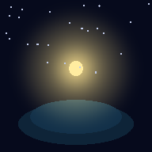

Firefly Island
Your lamp only lights when someone else lights it.
Island location
How the island works
Your lamp isn't yours to light
Only another firefly can light your lamp — and only you can light theirs. That's the whole game. Give light freely; it tends to come back.
You have a zone of action
Drag your firefly to move around the island. While you're moving, a dashed circle shows how far your glow reaches — you can only touch fireflies inside it. Glide close to someone before you tap.
Here's the secret: every firefly giving you light extends your reach. Light received is power to give.
Giving light — and taking it back
Tap a firefly in your reach and your light goes to them — and stays with them, even after you fly away. Tap again to take it back. The little beads above a lit firefly show who its light is from — your bead wears a white ring.
A lamp burns as long as at least one firefly's light is with it. If two of you give light to the same lamp and one takes theirs back, it keeps burning on the other's. It only goes dark when the last light is withdrawn.
The lighthouse
The beacon is the island's heart, and it slowly dims. Glide close and tap it to feed it a spark. Feed it well and the whole island celebrates.
The island spirit
Every island has an invisible keeper. It greets you when you arrive, drinks the light you feed the beacon, and never sleeps.
Travel and founding
Share shows a QR code — anyone who scans it lands on this island, next to you. The ⇄ button by the island's name lets you travel — or found a brand-new island and give it a name of your own.